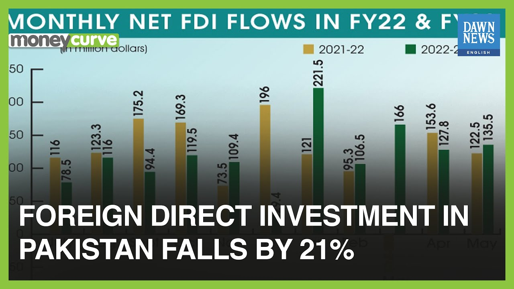

Pakistan's Foreign Direct Investment Dips 21% Amidst Economic Crisis
Image Credits https://www.youtube.com/watch?v=-YTshkx-tdw
Imagine you are a foreign investor interested in Pakistan, a country with a strategic location, abundant natural resources and a young, skilled workforce. You have done your research and are convinced that investing in Pakistan could yield great returns. However, as you read the latest news on the country's economic situation, your enthusiasm is dampened.
You learn that Pakistan's foreign direct investment (FDI) has decreased by 21% in the first 8 months of the current fiscal year, compared to the same period last year. FDI inflows are down to $1.47 billion, from $1.86 billion in 2018-19. This is the lowest level of FDI in the first 8 months of a fiscal year since 2015-16.
The reason for this decline is the economic crisis that Pakistan is facing. The country is struggling with a high inflation rate, currency devaluation, a large fiscal deficit, and a heavy external debt burden. This has led to a decline in business confidence, which in turn has reduced the appetite for foreign investment.

FDI is crucial for countries like Pakistan that need external capital to finance their development projects and create jobs. By investing in Pakistan, foreign companies can tap into its potential as a consumer market, as well as its opportunities in sectors such as energy, agriculture, textiles, and services. Pakistani authorities have acknowledged this and have been trying to attract more FDI through policy measures such as tax exemptions, special economic zones, and investor facilitation centers.
However, the economic crisis has made the task harder. Investors are wary of putting their money in a country with an uncertain macroeconomic outlook and a business environment that is perceived as unfriendly. A lack of transparency, bureaucratic red tape, corruption, and security concerns are also factors that discourage FDI.
Examples of Decreased FDI and their Consequences
The decline in FDI is not evenly spread across all sectors. Some of the hardest-hit industries are manufacturing, construction, and power. The textile and clothing sector, which is one of the biggest employers in Pakistan, has also suffered due to a lack of demand from foreign buyers.
For example, Nissan announced in May 2020 that it was closing its factory in Pakistan, just two years after opening it. The Japanese automaker cited low sales volume and a lack of profitability as the reasons for the closure. The plant had the capacity to produce up to 30,000 units per year, but was only producing around 1,000 units per year. This resulted in the loss of around 2,000 jobs.

The construction sector, which was expected to benefit from the government's low-cost housing scheme, has also seen a decrease in FDI. In January 2020, the Malaysian property developer MRCB Quill REIT announced that it was pulling out of a $45 million joint venture with a Pakistani company to build a commercial plaza in Islamabad. The company cited the economic situation and the lack of progress in obtaining required approvals as reasons for its decision. This meant that the project was delayed, and the Pakistani company had to look for another partner.
The power sector, which is undergoing a transition from thermal-based generation to renewable-based generation, has also seen a decrease in FDI. In February 2020, the Norwegian company Scatec Solar announced that it was delaying the construction of a 150 MW solar power plant in Balochistan due to security concerns. The project, which was supposed to be completed by the end of 2020, had already faced delays due to the pandemic and the lack of financing. The delay means that Pakistan will have to wait longer to add more renewable energy to its grid.
Case Studies of Successful FDI in Pakistan
Despite the decrease in FDI, there are still some success stories to be found in Pakistan. In recent years, some foreign companies have invested in the country and have reaped the benefits of doing so. Let's take a look at some examples.
- Telenor: The Norwegian telecom company has been operating in Pakistan since 2005 and has invested over $3.5 billion in the country. Telenor Pakistan has over 45 million customers and is one of the largest taxpayers in the telecom sector. The company has also been praised for its social responsibility programs, which aim to promote digital literacy and women's empowerment.
- Unilever: The British-Dutch consumer goods company has been in Pakistan since 1948 and has invested heavily in its local operations. Unilever Pakistan has a portfolio of over 30 brands and is a market leader in categories such as tea, skin care, and home care. The company sources over 90% of its raw materials locally and has a strong focus on sustainability.
- Coca-Cola: The American beverage company has been in Pakistan since 1953 and has invested over $450 million in the country. Coca-Cola Pakistan has a diverse product range and is a market leader in categories such as carbonated soft drinks, juices, and water. The company has also been recognized for its efforts to give back to the community, such as providing clean drinking water and supporting women entrepreneurs.
These companies show that investing in Pakistan can be profitable and socially responsible. However, they also demonstrate that success is not guaranteed and that foreign companies need to be committed to long-term investments and partnership with the local community.
Curated by Team Akash.Mittal.Blog
Share on Twitter Share on LinkedIn